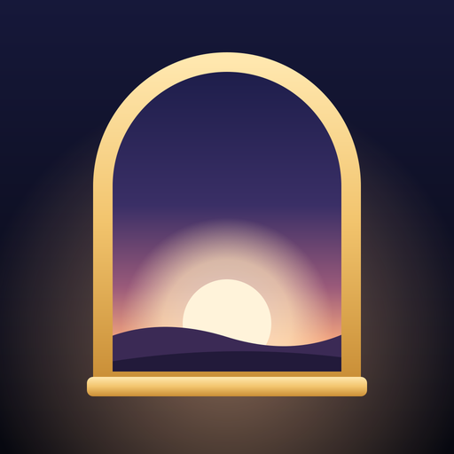

Trouvez les réponses aux questions fréquentes ci-dessous.
Médite la Bible avant tes apps. « Cherchez premièrement le royaume de Dieu » (Matthieu 6:33). Les apps que vous choisissez restent verrouillées jusqu’à la lecture du verset du jour : environ 30 secondes avec un verset, une réflexion, une prière et un quiz facultatif. Ensuite, vos apps se débloquent.
Ouvrez les réglages de First, puis « Apps bloquées » et touchez « Modifier ». Vous choisissez vos apps dans le sélecteur d’Apple. Les horaires de blocage se règlent au même endroit.
Un déblocage d’urgence de 15 minutes est disponible à tout moment, directement depuis l’écran de blocage.
Non. Le verrouillage passe par Temps d’écran d’Apple : First ne reçoit que des jetons opaques et ne voit ni le nom de vos apps ni l’usage que vous en faites.
First Premium donne accès au blocage des apps, aux widgets et aux plans de lecture. Deux formules : annuelle à 39,99 € avec 3 jours d’essai gratuit, ou mensuelle à 6,99 €. Le prix applicable est affiché dans l’app avant l’achat.
Pour restaurer, ouvrez les réglages de First et touchez « Restaurer les achats » avec le même identifiant Apple. Pour résilier, ouvrez Réglages sur votre iPhone, touchez votre nom, puis Abonnements, et choisissez First, au moins 24 heures avant la fin de la période en cours.
First n’a pas de compte. Vos séances, favoris et réglages restent sur votre iPhone, sans iCloud ni serveur First. Seules des statistiques d’usage anonymes sont mesurées. Voir notre politique de confidentialité.
Notre équipe est là pour vous aider. Écrivez-nous et nous vous répondrons au plus vite.
✉ contact@shipit.groupFind answers to common questions below.
Meditate on the Bible before your apps. “Seek ye first the kingdom of God” (Matthew 6:33). The apps you choose stay locked until you read the verse of the day: about 30 seconds with a verse, a reflection, a prayer and an optional quiz. Then your apps unlock.
Open First’s settings, then “Locked apps”, and tap “Edit”. You pick your apps in Apple’s picker. The blocking schedule is set in the same place.
A 15-minute emergency unlock is available at any time, right from the shield screen.
No. Locking goes through Apple’s Screen Time: First only receives opaque tokens and cannot see the names of your apps or how you use them.
First Premium gives access to app blocking, widgets and reading plans. Two plans: yearly at €39.99 with a 3-day free trial, or monthly at €6.99. The applicable price is shown in the app before purchase.
To restore, open First’s settings and tap “Restore purchases” with the same Apple ID. To cancel, open Settings on your iPhone, tap your name, then Subscriptions, and choose First, at least 24 hours before the end of the current period.
First has no account. Your sessions, favorites and settings stay on your iPhone, with no iCloud and no First server. Only anonymous usage statistics are measured. See our Privacy Policy.
Our team is happy to assist you. Reach out and we'll get back to you as soon as possible.
✉ contact@shipit.groupEncuentra a continuación las respuestas a las preguntas frecuentes.
Medita la Biblia antes de tus apps. «Buscad primeramente el reino de Dios» (Mateo 6:33). Las apps que eliges permanecen bloqueadas hasta que lees el versículo del día: unos 30 segundos con un versículo, una reflexión, una oración y un cuestionario opcional. Después, tus apps se desbloquean.
Abre los ajustes de First, luego «Apps bloqueadas» y toca «Editar». Eliges tus apps en el selector de Apple. El horario de bloqueo se ajusta en el mismo lugar.
Tienes un desbloqueo de emergencia de 15 minutos disponible en cualquier momento, directamente desde la pantalla de bloqueo.
No. El bloqueo pasa por Tiempo de uso de Apple: First solo recibe identificadores opacos y no ve el nombre de tus apps ni el uso que haces de ellas.
First Premium da acceso al bloqueo de apps, a los widgets y a los planes de lectura. Dos planes: anual a 39,99 € con 3 días de prueba gratuita, o mensual a 6,99 €. El precio aplicable se muestra en la app antes de la compra.
Para restaurar, abre los ajustes de First y toca «Restaurar compras» con el mismo Apple ID. Para cancelar, abre Ajustes en tu iPhone, toca tu nombre, luego Suscripciones y elige First, al menos 24 horas antes del final del periodo en curso.
First no tiene cuenta. Tus sesiones, favoritos y ajustes se quedan en tu iPhone, sin iCloud ni servidor de First. Solo se miden estadísticas de uso anónimas. Consulta nuestra política de privacidad.
Nuestro equipo está encantado de ayudarte. Escríbenos y te responderemos lo antes posible.
✉ contact@shipit.groupTrova qui sotto le risposte alle domande più frequenti.
Medita la Bibbia prima delle tue app. «Cercate prima il regno di Dio» (Matteo 6:33). Le app che scegli restano bloccate finché non leggi il versetto del giorno: circa 30 secondi con un versetto, una riflessione, una preghiera e un quiz facoltativo. Poi le tue app si sbloccano.
Apri le impostazioni di First, poi «App bloccate» e tocca «Modifica». Scegli le tue app nel selettore di Apple. Le fasce orarie di blocco si impostano nello stesso punto.
Uno sblocco d’emergenza di 15 minuti è disponibile in qualsiasi momento, direttamente dalla schermata di blocco.
No. Il blocco passa da Tempo di utilizzo di Apple: First riceve solo identificativi opachi e non vede il nome delle tue app né l’uso che ne fai.
First Premium dà accesso al blocco delle app, ai widget e ai piani di lettura. Due piani: annuale a 39,99 € con 3 giorni di prova gratuita, oppure mensile a 6,99 €. Il prezzo applicabile è indicato nell’app prima dell’acquisto.
Per ripristinare, apri le impostazioni di First e tocca «Ripristina acquisti» con lo stesso ID Apple. Per disdire, apri Impostazioni sul tuo iPhone, tocca il tuo nome, poi Abbonamenti e scegli First, almeno 24 ore prima della fine del periodo in corso.
First non ha account. Le tue sessioni, i preferiti e le impostazioni restano sul tuo iPhone, senza iCloud né server di First. Vengono misurate solo statistiche d’uso anonime. Consulta la nostra informativa sulla privacy.
Il nostro team è felice di aiutarti. Scrivici e ti risponderemo il prima possibile.
✉ contact@shipit.groupEncontre abaixo as respostas para as perguntas frequentes.
Medite na Bíblia antes dos seus apps. «Buscai primeiro o reino de Deus» (Mateus 6:33). Os apps que você escolhe ficam bloqueados até você ler o versículo do dia: cerca de 30 segundos com um versículo, uma reflexão, uma oração e um quiz opcional. Depois, seus apps são desbloqueados.
Abra os ajustes do First, depois «Apps bloqueados» e toque em «Editar». Você escolhe seus apps no seletor da Apple. Os horários de bloqueio são ajustados no mesmo lugar.
Um desbloqueio de emergência de 15 minutos está disponível a qualquer momento, direto na tela de bloqueio.
Não. O bloqueio passa pelo Tempo de Uso da Apple: o First recebe apenas identificadores opacos e não vê o nome dos seus apps nem o uso que você faz deles.
O First Premium dá acesso ao bloqueio de apps, aos widgets e aos planos de leitura. Dois planos: anual por 39,99 € com 3 dias de teste grátis, ou mensal por 6,99 €. O preço aplicável é exibido no app antes da compra.
Para restaurar, abra os ajustes do First e toque em «Restaurar compras» com o mesmo ID Apple. Para cancelar, abra Ajustes no iPhone, toque no seu nome, depois em Assinaturas e escolha First, pelo menos 24 horas antes do fim do período atual.
O First não tem conta. Suas sessões, favoritos e ajustes ficam no seu iPhone, sem iCloud nem servidor do First. Apenas estatísticas de uso anônimas são medidas. Veja nossa política de privacidade.
Nossa equipe está pronta para ajudar. Escreva para nós e responderemos o mais rápido possível.
✉ contact@shipit.group